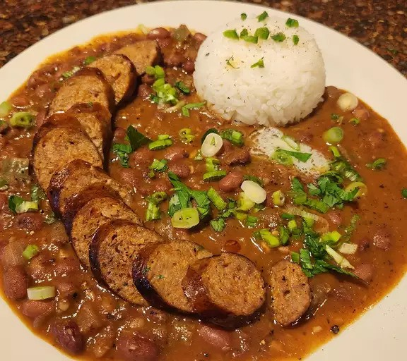

Red Beans and Rice

Description:
If you're looking for an introduction to the Cajun cuisine, then look no further.
Joining andouille sausage, fresh garden vegetables, spices, and your choice of rice. This authentic Louisiana dish packs a flavorful punch that will leave you salivating.
In this recipe you will learn everything needed to create this savory dish including the best sides to go along with it.
Ingredients:
- 1 pound dry red kidney beans
- 1/4 cup olive oil
- 1 large onion, chopped
- 1 green bell pepper, chopped
- 2 celery stalks, chopped
- 2 tablespoons minced garlic
- 6 cups water
- 2 bay leaves
- 1 tablespoon dried parsley
- 1 teaspoon dried thyme
- 1 teaspon Cajun seasoning
- 1/2 teaspoon cayenne pepper
- 1 pound andouille sausage, sliced
- 4 cups chicken broth
- 2 cups rice of choice
Steps:
- Rinse dry beans and soak in a large pot overnight
- Heat olive oil in a skillet over medium heat
- Cook down onion, bell pepper, celery and garlic for ~3-4 minutes
- Rinse dry beans again and transfer back to large pot with 6 cups water
- Mix in cooked vegetables with beans
- Add bay leaves, parsley, thyme, cajun seasoning and cayenne pepper
- Bring to a boil and then reduce heat to medium-low, simmer for ~2 1/2 hours
- Brown sliced sausage in separate pan. Once browned, add to pot
- Continue simmering for another ~30 minutes
- While everything is simmering, add 4 cups chicken broth and 2 cups rice to a separate pot
- Bring chicken broth and rice to boil, reduce heat, cover and simmer for 20 minutes
- Once all is cooked, serve beans over steamed rice